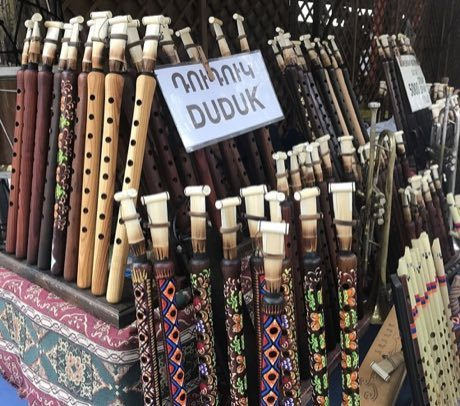

Home / Crossroads and Golden Ages / Persia, Caucasus and Central Asia
Playable heritage gameDuduk
Also known as Դուդուկ · Armenian apricot-wood reed oboe
The duduk is an Armenian double-reed pipe carved from apricot wood, with a wide reed that gives it a warm, breathy, slightly nasal voice. A player covers and lifts the finger holes along the pipe, holding long notes on one steady breath, while a second player often holds a soft low drone beneath the tune.



How to play
- Eight lanes stand for the notes of the scale, the lowest on the left and the octave on the right.
- Above each note a pipe diagram shows which finger holes are covered; lifting fingers from the bottom upward makes the note climb.
- Notes travel toward the line at the bottom: strike the lane just as a note arrives and let long notes ring.
- A soft low drone sounds under the whole tune, as a second player would hold it. Start with the slow descent, then try the sigh, the climb to the high note, and the figures in Watch and learn.
Rules at a glance
- The scale is a minor mode of seven notes plus the octave, set on a fixed low root.
- Covering every hole gives the lowest note; lifting fingers from the bottom upward raises the pitch step by step.
- A stroke within a hair of the note is perfect, a near one is good, and a miss scores nothing.
- An extra stroke while a song is running costs a few points.
- Each song plays twice; three stars need roughly nine notes in ten on time.
- A steady low reed drone sounds from the start of each song to its end.
About the tradition
The duduk is the best-known wind instrument of Armenia, made from apricot wood and played in villages, at gatherings and on stage for many centuries. Its tradition is passed from player to player, and the sound is treasured as a voice of the Armenian highlands.
Origins
Usually placed in the era of Crossroads and Golden Ages (about 500 to 1500), although its exact origins are uncertain, within the cultural world of Persia, Caucasus and Central Asia.
Credits
- Tradition: Armenian duduk playing; melodies written for this game
- Photo of a duduk from Wikimedia Commons (CC0, Benoit Prieur)
- Photo: Benoît Prieur, CC0, source on Wikimedia Commons
- Text: CC BY-SA 4.0, World Heritage Games.
Sources

Get the app
Duduk is one of 9 instruments and voices in the Wind & Voice of the World app for Android. Submitted to Google Play; in review. Store links appear here the day it goes live. One app, many traditions, no account needed.
More games to play

Highland Bagpipe Chanter and Drone
United Kingdom · Musical instrumentsPlay preview · in the Wind & Voice of the World app


More from Armenia


Kochari
Armenia · Dances
Kokh
Armenia · Wrestling and martial sports
Lavash Baking
Armenia · Crafts and making